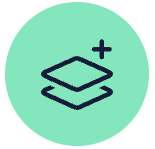

|  | ||
|---|---|---|
| Designer | Frontend Developer | Mentor |
| I value simple content structure, clean design patterns, and thoughtful interactions. | I like to code things from scratch, and enjoy bringing ideas to life in the browser. | I genuinely care about people, and enjoy helping them work on their craft. |
| Things I enjoy designing: | Languages I speak: | Experiences I draw from: |
| UX, UI, Web, Apps, Logos | HTML, Pug, Slim, CSS, Sass, Git | UX/UI, Product design, Freelancing |
| Design Tools: | Dev Tools: | Mentor Stats: |
| Affinity Designer | Astro JS | 9+ years experience |
| Figma | Bitbucket | 30+ short courses |
| Pen & Paper | Bootstrap | 65+ bootcamps |
| Sketch | Bulma | 250+ students |
| Codekit | 2,500+ mentor sessions | |
| Github | 60+ group critiques | |
| Netlify | 18,000+ bits of feedback | |
| Tailwind CSS | ||
| VS Code |
Living, learning, & leveling up one day at a time.
Handcrafted by me